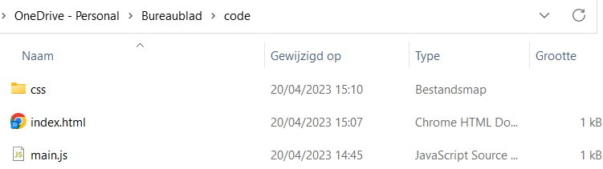
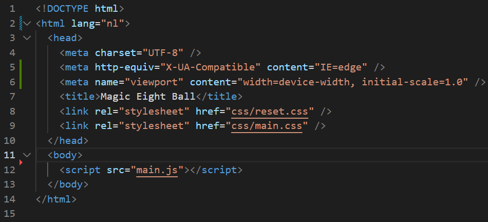
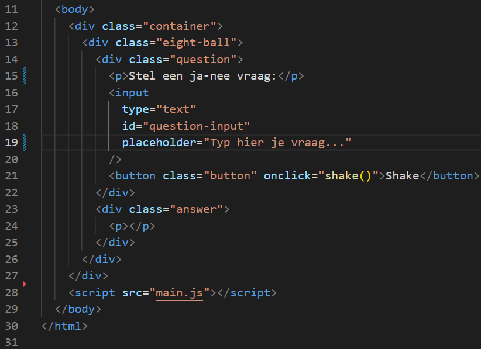
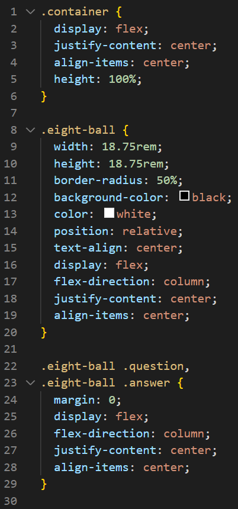
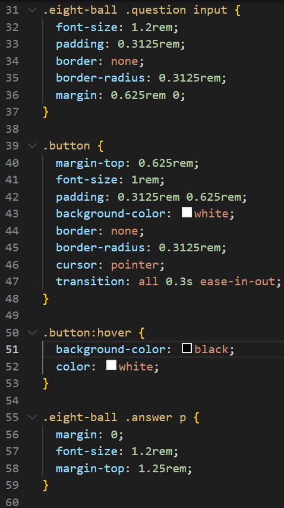
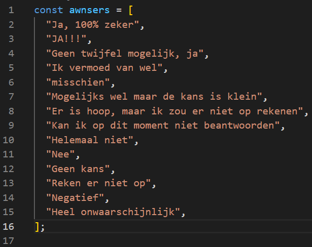
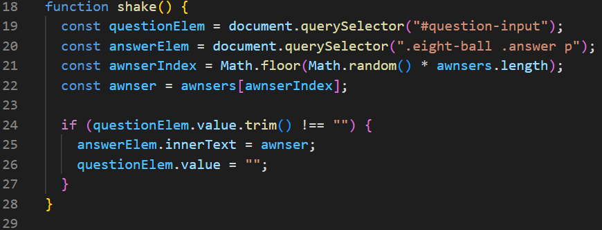

Workshop Coderen
We zullen een soort van magic 8 ball maken waar je een (ja/nee) vraag aan kan stellen en dan komt er een antwoord
uit de bal.
Dit is een voorbeeld van wat we zullen maken met behulp van een stappenplan.
Stap 1 - opzetten van een project
Om te beginnen heb je een code-editor nodig zoals Visual Studio Code.
- Eerst maak je een folder aan:

- Als je Visual studio zal openen zul je op het scherm hieronder terechtkomen en open je de zonet gemaakte folder.
- Vervolgens maak je 3 nieuwe files: index.html, style.css en main.js. Dit doe je door op knop te drukken die we
op onderstaande foto tonen.
- Het volgende wat je doet is de live server extensie installeren en vervolgens die openen via Go Live (dit staat
rechtsonderaan).
Stap 2 - HTML & CSS
Nu zullen we HTML en CSS toevoegen
- Eerst kopieer je onderstaande code in je index.html bestand. Dit is een basis die je bestanden ook aan elkaar
linkt.

In de link tag linken we het CSS bestand en in de script tag voegen we javascript toe.
- Nu zet je in je index.html onderstaande code (lijn 9 tot lijn 21 ) dit plaats je tussen de body tags maar wel
boven de script.

Met de input tag maak je het tekstveld waar de gebruiker zijn vraag invoert. De button tag is de knop die je ziet waar je op kan klikken.
- Als je nu gaat kijken naar je webpagina zal je zien dat er tekst staat en een invoer veld. Om nu de bal te
creeëren zullen we onderstaande code toevoegen in je style.css, hierin kun je spelen met kleuren, de grootte,...


Stap 3 - Javascript
Stel nu eens een vraag? Je zult zien dat je nog geen antwoord zal krijgen dit omdat we nog wat javascript moeten toevoegen.
- Eerst zal je een array(verzameling) maken in dit geval: const messages. hierin zul je enkele uitkomsten neerzetten zoals in onderstaand voorbeeld. Je kan zelf kiezen welke teksten je gebruikt.

- Vervolgens maak je een functie aan die je uitkomsten geautomatiseerd teruggeeft.

Hiermee zou je volledig klaar moeten zijn